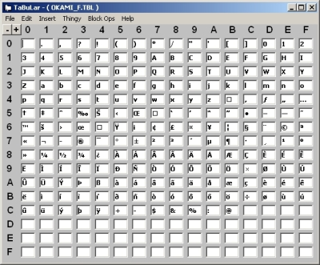

Principal
≈ (Pre)Historia del proyecto
El 23 de Febrero de 2007 MaGaRCaN intenta dar el pistoletazo de salida a esta gran odisea. Comienza creando un blog y en el plasma sus avances. Tras conseguir un ejemplar del juego en su versión PS2, empieza a trastear con los archivos en su PC y descubre los 'míticos' ficheros AFS, donde se encuentran empaquetados todos los ficheros del juego.
Dentro de esos empaquetados existen infinidad de archivos. El primer fichero que llama la atención al abrir el primer empaquetado es core.bin. Tanto por su nombre, como porque va acompañado de otros 2 con extensión '_f.bin' y '_g.bin'. core.bin se presenta como un buen punto de partida, aunque como después descubriría no el correcto. Para ver resultados rápidos lo mejor hubiese sido empezar por palmenu.bin, donde se presenta la selección de idiomas.
Tras unas cuantas horas de desesperación, MaGaRCaN empieza a impacientarse al no encontrar texto legible en los ficheros donde seguramente estaba mirando. El problema es, como bien expone en su blog, que los desarrolladores utilizaron una tabla de caracteres distinta a la normal (ANSI ASCII). Lo intentó sobre la versión USA y los resultados fueron los mismos que con la versión PAL. Necesitaba encontrar la correspondiente 'Piedra Rosetta', es decir, un mapa de caracteres que le permitiese asociar un conjunto de bits a un carácter de modo que al sustituir cada uno de ellos utilizando un editor hexadecimal le permitiese ver código legible. Cinco días más tarde, MaGaRCaN consiguió dar con parte de la tabla de caracteres, entusiasmándonos con lo que era su mayor avance hasta el momento.
Parecía que todo iba a ir viento en popa y que en cuestión de meses tendríamos Okami traducido, ya que había pactado utilizar los textos contenidos en el libreto de Guadagames. Sin embargo, inesperadamente el 20 de Marzo de 2007, tras rendirse a la cantidad inmensa de textos y a su distribución caótica por los ficheros contenidos en el empaquetado AFS desiste en sus intentos al hallarse desprovisto totalmente de apoyo. Hace poco descubrí que las razones de su abandono estaban relacionadas con su desarrollo profesional.
≈ Inicios del proyecto
Tras el anuncio e inminente salida al mercado de la versión WII decidí ponerme a investigar por pura curiosidad. A partir de ese momento descubro todo el mundo del romhacking y el blog de MaGaRCaN (se hace llamar Manugarrote en EOL). Intento prestar mi ayuda a la gente que comienza a traducir la versión de WII desde el foro de EOL, pero al ver que no muestran intenciones de dar su apoyo a la versión de PS2 me desvinculo del proyecto.
En Junio del 2008 empiezo a investigar más a fondo e intento desarrollar una versión para PS2 por mi cuenta, publicando lo investigado hasta el momento en el foro de EOL. En ese hilo explico la forma primitiva de trabajar. Bastante 'oscura', rudimentaria y la verdad es que no invitaba a que se apuntase mucha gente al proyecto :). Por aquel entonces subo un video de los avances a youtube.
Visto lo visto y que los chicos que habían hecho ciertos avances en la versión WII no quisieron organizarse para llevar a cabo un proyecto conjunto, decido organizarme en otro foro de forma privada, donde empiezo a recibir bastante apoyo y es en ese punto donde decido dedicarle el poco tiempo libre que tenía a desarrollar herramientas que facilitasen la vida a la gente que quería ponerse a traducir, junto a video-tutoriales de como utilizarlas.
En aquel foro en el que empezamos daba la sensación de que cualquier momento y fácilmente perderíamos el control del proyecto. Además el equipo empezaba a formarse y había miembros de cuyas intenciones desconfiábamos. Llevábamos mucho trabajado y no queríamos que nadie se aprovechase. Por lo tanto la necesidad de mejorar la organización del proyecto nos obligó a buscar un nuevo foro más relacionado con la traducción de juegos. Nace el Proyecto OKAMI y desde entonces todo bastante bien, en lo que a organización se refiere. Aprovecho para dar las gracias a Mr. Heston desde aquí, que se ha portado fenomenal con el equipo. Os recomiendo que si alguna vez os animáis a llevar acabo alguna traducción y necesitáis alojamiento, contactéis con él.
≈ Madurez del proyecto
En dicha comunidad de romhackers se creo un foro privado para los miembros del equipo al que cualquier persona interesada podía acceder una vez recibíamos su solicitud, aunque muchos, entraban, parecía que iban a encargarse de la traducción entera y luego no volvían a aparecer. Definí una guía de trabajo que todos seguimos al pie de la letra para llegar a buen puerto: Extracción de textos, traducción, inserción y creación y aplicación de parches. Entre medias de todo ello y de forma paralela se llevó a cabo la edición de las imágenes que conseguimos extraer e reinsertar en parte con Game Graphics Studio y OPTPiX. Mr Heston nos ofreció alojamiento en un servidor para almacenar todo nuestro trabajo del proyecto, de modo que hemos utilizado Subversion para mantener a todo el equipo sincronizado.
Obviamente el paso que más nos ha ocupado es el de la traducción. Para ello utilizamos una herramienta que desarrollé llamada OkamiWizardTranslator (llamada OWT entre nosotros) que es una aplicación Java de consola. Hay que aclarar un detalle en este punto. La traducción de Okami tanto en la versión PS2 como WII se ha realizado sobre la versión PAL, sin embargo, los textos que se han sustituido difieren. Es decir, en la versión PS2 el idioma sustituido es el francés, mientras que en la versión WII se ha sustituido el idioma inglés. El problema que nos ha impedido en la versión PS2 sustituir el idioma inglés, es que si lo hacíamos se producía un cuelgue irreversible en la consola al leer los ficheros traducidos.
≈ Llegamos a buen puerto
Pero al final hemos podido con todos los textos. Y ahora solo nos queda realizar la fase de betatesting para pulirlo completamente. Nos ha llevado más de un año. Esperamos que disfrutéis de la traducción y la valoréis como lo que es.
Por supuesto, ¡comprad el juego original!
— Pignium, en nombre de todo el equipo. 8 de Julio de 2009. —
↓ Descarga de responsabilidad
Esta traducción se distribuye "tal cual", y RESERVOIR WOLVES no proporcionará ninguna clase de garantía. RESERVOIR WOLVES no se responsabiliza de cualquier mal uso que se pueda dar a la traducción, y no responderá ante ningún desperfecto provocado por un uso indebido en videoconsolas, ordenadores o consumibles.
Todos los derechos son propiedad de sus respectivos propietarios, y en ningún momento debe entenderse ánimo de lucro en la traducción a español de OKAMI, su manual, su packaging o sus elementos de promoción por parte de RESERVOIR WOLVES.
Asimismo, no existe ningún interés de perjuicio sobre CAPCOM CO., LTD., Ready At Dawn Studios LLC., Clover Studio CO. o cualquier otra compañía o individuo participante en el desarrollo o distribución de Okami, y la distribución del parche, manual y demás elementos traducidos se detendrá inmediatamente en caso de ser requerido por los titulares de los derechos.
Esta traducción es gratuita. Venderla es ilegal e inmoral, y pagar por ella te hace partícipe de un delito.
Apoya a los videojuegos y sus creadores:
compra juegos originales.
RESERVOIR WOLVES
8 de Julio de 2009
Cómo se hizo...
≈ Paso 0º - Volcado de contenido
Herramienta: Editor de imágenes ISO (Por ejemplo, ISOBuster).
Proceso: Partiendo de nuestra versión original de OKAMI PAL MULTI5 tanto en plataforma PS2, como plataforma WII, se crearon 2 ISO's. Se extrajo el contenido de cada una de ellas con un editor de ISO's en una carpeta de trabajo, p.e. OKAMI_WORKSPACE_PATH.
≈ Paso 1º - Desempaquetado del paquete _DATA0.AFS
Herramienta: AFSExplorer.
Proceso: Lo primero que hicimos es estudiar los paquetes AFS a ver que encontrábamos. El paquete _DATA0.AFS contiene los textos, mientras que el _DATA1.AFS contiene los videos. Se detectaron y exportaron los archivos con textos incluidos en _DATA0.AFS. Los sospechosos habituales son identificables por el sufijo:
- "nombre_f.*" :: Archivo con textos en FRANCES (que debemos exportar). Estos son los que terminaremos modificando, de modo que los textos en francés se sustituirán por textos en español.
- "nombre_g.*" :: Archivo con textos en ALEMÁN (los obviabamos).
- "nombre_e.*" o en su defecto "nombre.*" :: Archivo con textos en INGLÉS (que debemos exportar también). A partir de estos tradujimos los textos, ya que los componentes del grupo teníamos mucha más soltura en inglés, que en francés o alemán.
≈ Paso 2º - Extraer textos de archivos con textos en INGLÉS
Herramientas:
- Tabla TBL o Thingy (Proporcionada por GALLY, ¡Un saludo de todo el grupo!): Tabla a cargar con ficheros inglés y Tabla a cargar con ficheros en frances/español :: Marca la correspondencia de caracteres para visualizar el contenido de dichos archivos extraídos en un editor hexadecimal.

Figura 1: TBL utilizada para okami vista a través del programa TaBuLar.
- Translhextion :: Editor hexadecimal que utiliza la tabla TBL para mostrarnos el texto.
- Editor de hojas de calculo *.XLS (MS Excel + (Complemento :: Herramientas para analisis) => ACTIVADO) :: Excel con toda la información que nos permitirá reinsertar los textos traducidos y recalcular los punteros.
Proceso:
Procedimos a buscar y extraer los textos en cada archivo con textos en INGLÉS. Los textos en OKAMI están organizados de modo que existen N párrafos en cada archivo con textos, donde cada párrafo a su vez contiene M paginas, donde cada pagina por lo normal posee 1 o 2 líneas de texto, aunque existen excepciones donde aparecen más de dos líneas por página. En el juego un párrafo se correspondería a una secuencia de textos donde se nos obliga o no a ir pulsando para ir avanzando página a página en el diálogo, donde cada pagina como decimos posee una serie de líneas. Aparte de los diálogos dichos párrafos también representan nombres de personajes, descripciones de objetos, es decir, no se reducen a contener únicamente los diálogos.
Para averiguar si aparecían textos en los archivos extraídos utilizamos la opción "Find using table..." de Translhextion, donde la combinación de caracteres a buscar es ".»" (cuya representación en hexadecimal es 0180), la cual determina el fin de un párrafo. Lo anterior es aplicable a la plataforma PS2. Para la WII la combinación de caracteres a buscar es "».".
Figura 2: Posiciones importantes dentro del archivo con textos en Inglés. Translhexion con TBL.
Una vez localizados los textos en un archivo con textos en INGLÉS empezamos a apuntar datos importantes en la excel. Los datos recogidos por cada archivo son los siguientes:
- Nombre Fichero Inglés :: Apuntamos el nombre del archivo con textos en INGLÉS. Según la figura 2 sería iteminfo_209
- Nombre Fichero Francés - Español :: Apuntamos el nombre del archivo con textos en FRANCÉS. Posteriormente esos textos serán traducidos y sustituidos en este mismo archivo. Según la figura 2 sería iteminfo_f_209
- Parte :: Ciertos archivos con textos están formadas por varias secciones de textos, no consecutivas. Este dato indica a que parte nos estamos refiriendo dentro de un determinado archivo de texto. Según la figura 2 sería en principio vacío, hasta que no se demuestre lo contrario. Si localizásemos más de una parte, comenzaríamos contabilizando desde la 1.
- COUNT (Número Punteros) :: Este valor indica el número de párrafos que nos vamos a encontrar. Al principio encontrar este valor cuesta un poco, pero cuando vemos 3 o 4 ficheros no tardamos en localizarlos. La zona donde se localiza la información de los punteros se denomina tabla de punteros y comienza como primer valor, con una longitud de 4 bytes, indicando el número de punteros. Según la figura 2 serían 01000000. Si pasamos esto de hexadecimal a decimal con la calculadora de windows, obviamente nos da 1. Un único puntero, y como vemos la tabla de punteros esta compuesta por un solo elemento. Este ejemplo es obvio, pero por ejemplo, si tuviésemos el archivo core.bin que posee 616 punteros (o, lo que es lo mismo, párrafos de texto) vemos que el valor que aparece al comienzo de la tabla de caracteres es 6802. ¿Qué pasa aquí? 6802 de hexadecimal a decimal no da 616, sino 26626. Para encontrar el verdadero valor tenemos que leer los bytes de derecha a izquierda, de modo que nos queda 0268, que al pasarlo a hexadecimal nos da 616.
- Inicio Tabla Punteros :: Tras apuntar el número de punteros, apuntamos la posición donde se sitúa el contador o número de punteros. Según la figura 2 la posición (en hexadecimal) de inicio de la tabla de punteros es 30.
- Posición Primer Puntero :: El primer puntero en la tabla de punteros aparece tras el contador, la posición contigua. Cada puntero ocupa 8 bytes, por lo que se diferencian en el tamaño con el contador, el cual ocupa 4 bytes. Translhexion muestra por defecto 16 bytes por fila, como vemos en la figura 2. Según la figura 2 la posición (en hexadecimal) del primer puntero en la tabla de punteros es 34.
- Fin Tabla Punteros :: El fin de la tabla de punteros coincide con el comienzo de los párrafos de texto. Según la figura 2 la posición (en hexadecimal) del final de la tabla de punteros es 3C.
- Fin Texto Inglés :: Apuntamos la posición del final de los párrafos (La posición posterior al último ".»" que aparezca en el caso de la plataforma PS2 o el último "»." en el caso de la WII). Según la figura 2 la posición (en hexadecimal) del fin de textos es B6.
- Inicio Posts. Inglés :: Apuntamos la posición de la línea que aparece a continuación del fin del texto en Inglés. Según la figura 2 la posición (en hexadecimal) del inicio de postinstrucciones es C0.
- Fin Posts. Inglés :: Como vemos tras los textos aparecen una serie de caracteres que hay que respetar y que tienen a continuación un conjunto de caracteres de valor hexadecimal 00, al cual llamamos margen, y de nuevo aparecen caracteres. Según la figura 2 la posición (en hexadecimal) del final de las postinstrucciones es F4.
- Fin Margen Inglés :: Tras las postinstrucciones aparece el margen como hemos dicho en el apartado anterior. Según la figura 2 la posición (en hexadecimal) del final del margen es 310.
Una vez que hemos apuntado la información importante del archivo en la excel, seleccionamos desde la posición "Fin Tabla Punteros" hasta la posición "Fin Texto Inglés" y pulsamos CTRL+D para extraer los párrafos de texto a un fichero TXT. Ese mismo proceso lo repetimos con cada uno de los archivos, de forma que conseguimos todos los textos de los archivos con los textos en inglés, guardando cada TXT extraído en una carpeta independiente.
La última parte de este apartado consiste en rellenar otros datos importantes de la excel. En este caso, abrimos de nuevo con Translhexion para cada archivo en FRANCÉS asociado a los procesados en INGLÉS y rellenamos de igual forma que en el anterior apartado, los campos: "Fin Texto Francés", "Inicio Posts. Francés", "Fin Posts. Francés" y "Fin Margen Fran-Esp".
≈ Paso 3º - Traducción
Herramientas:
- OKAMI WIZARD TRANSLATOR (OWT) :: Herramienta desarrollada por pignium que permite ir generando la traducción para PS2 y WII de forma unificada.
- IDE Eclipse :: Herramienta para ejecutar y depurar programas. No tengáis miedo, pues únicamente vamos a utilizarlo para ejecutar el OWT e ir traduciendo desde la consola que nos proporciona. Además si alguien sabe de programación puede meterle mano al programa y reutilizarlo para otro juego ;).
- Notepad++ :: Editor de texto utilizado para repasar el resultado generado por el OWT.
Proceso:
Lanzamos la herramienta OWT utilizando cada uno de los ficheros TXT extraídos en el apartado anterior y que habían sido guardados en carpetas independientes. Pongamos un ejemplo a partir de ahora. Imaginemos que extrajimos los textos en la ruta C:\Okami\PS2\text. Dentro de esa ruta creamos una carpeta llamada \idkibashop donde volcamos la extracción del texto en ingles del paso anterior. Finalmente, en C:\Okami\PS2\text\idkibashop\ tendremos el archivo idkibashop.TXT.
Una vez localizado el fichero que contiene los textos extraídos en inglés lanzamos el IDE Eclipse.
Veamos con un ejemplo el funcionamiento del programa ya que su ejecución es asistida:
_________________ BIENVENIDO A OKAMI WIZARD TRANSLATOR _________________
Introduzca la ruta donde está ubicado el texto original:
C:\Okami\PS2\text\idkibashop
Introduzca el nombre del fichero que contiene el texto original:
idkibashop
¿El texto original está dividido en varias partes (Si=1\No=0)?
0
Esto está relacionado con los archivos formadas por varias secciones de textos, no consecutivas, de las que ya hablábamos en el apartado anterior. Imaginemos que hemos puesto 1, en vez de 0, en el dato anterior. Nos aparecerá lo siguiente:
Indique por favor la parte por la que desea comenzar:
1
Puede ser que se hayan acabado de procesar todas las partes o que el
texto no este dividido en partes realmente. Saliendo del OWT...
Como veis esto solo funciona para aquellos archivos que contienen los textos divididos en partes (p.e el archivo emfilemes).
Continuemos viendo la ejecución del programa.
El fichero C:\Okami\PS2\text\idkibashop\idkibashop_intermediate.txt
no existe. Se creara para almacenar la traducción.
Se ha recuperado el último CHECKPOINT del fichero con la traducción
C:\Okami\PS2\text\idkibashop\idkibashop_intermediate.txt
-> Existen 0 párrafo/s traducidos de 269.
WARNING: Problemas al leer el fichero
C:\Okami\PS2\text\idkibashop\idkibashop.resources. No se utilizará
fichero de apoyo.
Si es la primera vez que ejecutamos el programa sobre un archivo, OWT nos indicará que no existe el fichero intermediario y que va a proceder a crearlo. Por lo tanto si ahora consultamos la carpeta C:\Okami\PS2\text\idkibashop nos fijamos en que se ha creado un fichero llamado idkibashop_intermediate.txt. Este archivo intermedio podemos editarlo fácilmente con Notepad++. Aunque los textos que se visualizan durante el juego coinciden al 100% entre ambas versiones, a sido necesario editar las cabeceras y las instrucciones de control (introducido a través del OWT con la opción "texto sin espaciado") de estos archivos que es en lo único que difieren.
El CHECKPOINT se refiere al último párrafo traducido. Como hasta ahora no hemos traducido nada, pues el último párrafo es el 0.
Con respecto al fichero de apoyo, podemos crear un fichero de apoyo para que se nos sugieran traducciones a la hora de mostrarse una frase. Estas traducciones han sido extraídas con permiso del libreto de GUADAGAMES. La idea es crear un archivo con N filas donde cada fila tiene la forma FraseIngles=FraseEspañol. Un ejemplo sería crear un archivo llamado idkibashop.resources y guardar dentro N entradas, por ejemplo:
Buy=Comprar
Buy this?=¿Comprar esto?
Carrying=Inventario
Equip Glaives as main and sub weapons to increase attack power.=
Equipar las Espadas como armas principales y secundarias para aumentar el
poder de ataque.
No se ha hecho demasiado uso de estos archivos de apoyo, ya que la traducción del libreto no contenía todos los textos traducidos y los que estaban traducidos venían muy desordenados y contradictorios.
A continuación se comienzan a procesar uno a uno los párrafos:
_________________ INICIO DEL PÁRRAFO 1 DE 269 _________________
C a r r y i n g
Introduzca la posición del inicio del texto (posición inicial 0):
Inventario
Introduzca la posición del inicio del texto (posición inicial 0):
ERROR: Debe introducir un número.
0
Introduzca la traducción y pulse intro para ver acciones:
Inventario
Como veis, se nos indica el inicio del párrafo 1, de 269 párrafos en total. La frase a traducir es Carrying y se nos pide la posición en donde comienza el texto. Esto se pide para capturar la cabecera de la frase sin tener que indicarla a mano. En este caso la cabecera está vacía. Si intentamos indicar directamente la traducción se nos mostrará un error como en el ejemplo. Es obligatorio indicar que el inicio del texto. En este caso está en la posición 0 y después ya estamos en condiciones de introducir la traducción. Una vez escrita la traducción podemos realizar las siguientes acciones:
Acciones disponibles:
4.- Finalizar página.
5.- Introducir texto sin espaciado.
6.- Introducir texto con espaciado.
11.- Insertar exclamación.
13.- Salir.
Acción a realizar:
4
Tamaño del texto introducido
(WARNING: Tamaño Pequeño (x0.75) | Tamaño Grande (x1.25)):
Texto PS2 -> 20
Texto WII -> 20
Traducción PS2:
I n v e n t a r i o .Þ
Traducción WII:
I n v e n t a r i oÞ.
¿Desea introducir alguna frase adicional (Si=1\No=0)?.
No
ERROR: Debe introducir un número.
¿Desea introducir alguna frase adicional (Si=1\No=0)?.
0
_________________ FIN DEL PÁRRAFO 1 DE 269 _________________
Aquí podemos ver como se ha computado la traducción. Tiene 20 caracteres de longitud ya que se cuentan los espacios en blanco y es la forma en la que después debemos insertarlo en los archivos con los textos en francés. Sin embargo, en el archivo C:\Okami\PS2\text\idkibashop\idkibashop_intermediate.txt no se guarda con este formato, sino con uno que nos permita editarlo fácilmente. Sin espacios en blanco y con etiquetas que separan las partes. Podéis abrirlo para echarle un vistazo. Quedaría tal que así:
[H][/H][TT]Inventario[/TT][NPP]
[/P1]
Cabecera vacía, texto, símbolo de que es necesario pulsar el botón y finalmente la marca de fin de párrafo 1. Por lo tanto vemos que el párrafo 1 solamente contiene una frase de una línea.
Gracias al asistente se nos permite fácilmente añadir frases adicionales por si no nos entra todo el texto o por cualquier otra razón. Esta opción tiene más sentido en párrafos donde se explican cosas o existe un diálogo. Hay que señalar que si abrimos el archivo intermediario también podemos introducir frases adicionales.
_________________ INICIO DEL PÁRRAFO 10 DE 269 _________________
@
Introduzca la posición del inicio del texto (posición inicial 0):
2
Introduzca la traducción y pulse intro para ver acciones:
@
Acciones disponibles:
4.- Finalizar página.
5.- Introducir texto sin espaciado.
6.- Introducir texto con espaciado.
11.- Insertar exclamación.
13.- Salir.
Acción a realizar:
4
Tamaño del texto introducido
(WARNING: Tamaño Pequeño (x0.75) | Tamaño Grande (x1.25)):
Texto PS2 -> 2
Texto WII -> 2
Traducción PS2:
@ .Þ
Traducción WII:
@Þ.
¿Desea introducir alguna frase adicional (Si=1\No=0)?.
0
_________________ FIN DEL PÁRRAFO 10 DE 269 _________________
Si nos vamos al párrafo 10 nos encontramos con este tipo de frases que son especiales y simplemente se dejan como están.
Aquí podéis ver que tras el procesamiento del texto se indica que el texto ocupa 2 de longitud y comienza en la posición 2.
_________________ INICIO DEL PÁRRAFO 13 DE 269 _________________
A r e y o u s u r e y o u w a n t
t o t r a d e ?
Introduzca la posición del inicio del texto (posición inicial 0):
0
WARNING: El texto contiene salto de línea, asegúrese de introducir un
salto de línea.
Introduzca la traducción y pulse intro para ver acciones:
¿Estás seguro de querer negociar?
Acciones disponibles:
3.- Introducir salto de línea.
5.- Introducir texto sin espaciado.
6.- Introducir texto con espaciado.
11.- Insertar exclamación.
13.- Salir.
Acción a realizar:
3
Tamaño del texto introducido
(WARNING: Tamaño Pequeño (x0.75) | Tamaño Grande (x1.25)):
Texto PS2 -> 66
Texto WII -> 66
Traducción PS2:
¿ E s t á s s e g u r o d e q u e r e r n e g o c i a r ? .Û
Traducción WII:
¿ E s t á s s e g u r o d e q u e r e r n e g o c i a r ?Û.
Introduzca la traducción y pulse intro para ver acciones:
Acciones disponibles:
4.- Finalizar página.
5.- Introducir texto sin espaciado.
6.- Introducir texto con espaciado.
11.- Insertar exclamación.
13.- Salir.
Acción a realizar:
4
Tamaño del texto introducido
(WARNING: Tamaño Pequeño (x0.75) | Tamaño Grande (x1.25)):
Texto PS2 -> 0
Texto WII -> 0
Traducción PS2:
.Þ
Traducción WII:
Þ.
¿Desea introducir alguna frase adicional (Si=1\No=0)?.
0
_________________ FIN DEL PÁRRAFO 13 DE 269 _________________
Veamos un ejemplo un poco más complejo. En este caso la frase está compuesta de dos líneas y así se nos indica, diciéndonos que es necesario introducir un salto de línea.
Probamos a ver si nos entra toda la frase traducida en una sola línea. Si el programa no nos indica lo contrario es que no hay problema en ello. Si no entrase todo el texto se nos pediría que volviéramos a reorganizarlo.
Como el texto original ocupaba dos líneas nos vemos obligados a introducir la marca de salto de línea y después dejar la traducción de la segunda línea vacía y ya sí podemos introducir la marca de finalizar página.
Para que después en el juego no aparezca la segunda fila vacía, podemos tocar el intermediario y pasar esta entrada:
[H][/H][TT]¿Estás seguro de querer negociar?[/TT][CR]
[TT][/TT][NPP]
[/P13]
A esta otra:
[H][/H][TT]¿Estás seguro de querer negociar?[/TT][NPP]
[/P13]
Como veis lo único que se ha hecho es eliminar el texto vacío y la marca de salto de línea.
A continuación vamos a ver un nuevo ejemplo, esta vez con un texto que se va a mostrar resaltado en rojo en el juego:
_________________ INICIO DEL PÁRRAFO 15 DE 269 _________________
H u m a n i t y ' s f a i t h m a d e s o l i d .
,ñ. R e s t o r e s a l i t t l e S o l a r E n e r g y . .î
Introduzca la posición del inicio del texto (posición inicial 0):
2
WARNING: El texto contiene salto de línea, asegúrese de introducir un
salto de línea
WARNING: El texto contiene marcado de palabras, asegúrese de introducirlo.
Introduzca la traducción y pulse intro para ver acciones:
La fe de la humanidad como objeto.
Acciones disponibles:
1.- Iniciar marcado de texto.
2.- Finalizar marcado de texto.
3.- Introducir salto de línea.
5.- Introducir texto sin espaciado.
6.- Introducir texto con espaciado.
11.- Insertar exclamación.
13.- Salir.
Acción a realizar:
3
Tamaño del texto introducido
(WARNING: Tamaño Pequeño (x0.75) | Tamaño Grande (x1.25)):
Texto PS2 -> 68
Texto WII -> 68
Traducción PS2:
L a f e d e l a h u m a n i d a d c o m o o b j e t o . .Û
Traducción WII:
L a f e d e l a h u m a n i d a d c o m o o b j e t o .Û.
Hasta aquí nada nuevo. Hemos traducido la primera línea y introducido la marca de salto de línea.
Introduzca la traducción y pulse intro para ver acciones:
Acciones disponibles:
1.- Iniciar marcado de texto.
2.- Finalizar marcado de texto.
4.- Finalizar página.
5.- Introducir texto sin espaciado.
6.- Introducir texto con espaciado.
11.- Insertar exclamación.
13.- Salir.
Acción a realizar:
1
Tamaño del texto introducido
(WARNING: Tamaño Pequeño (x0.75) | Tamaño Grande (x1.25)):
Texto PS2 -> 0
Texto WII -> 0
Traducción PS2:
,ñ.
Traducción WII:
ñ, .
En este paso hemos dejado la traducción vacía porque queremos introducir una marca de texto sobresaltado desde el comienzo de la línea.
Introduzca la traducción y pulse intro para ver acciones:
Recobra un poco de Energía Solar
Acciones disponibles:
1.- Iniciar marcado de texto.
2.- Finalizar marcado de texto.
4.- Finalizar página.
5.- Introducir texto sin espaciado.
6.- Introducir texto con espaciado.
11.- Insertar exclamación.
13.- Salir.
Acción a realizar:
2
Tamaño del texto introducido
(WARNING: Tamaño Pequeño (x0.75) | Tamaño Grande (x1.25)):
Texto PS2 -> 64
Texto WII -> 64
Traducción PS2:
R e c o b r a u n p o c o d e E n e r g í a S o l a r .î
Traducción WII:
R e c o b r a u n p o c o d e E n e r g í a S o l a rî.
Ahora ya si que introducimos el texto traducido y como acción a realizar introducimos la marca de fin de texto sobresaltado.
Introduzca la traducción y pulse intro para ver acciones:
.
Acciones disponibles:
1.- Iniciar marcado de texto.
2.- Finalizar marcado de texto.
4.- Finalizar página.
5.- Introducir texto sin espaciado.
6.- Introducir texto con espaciado.
11.- Insertar exclamación.
13.- Salir.
Acción a realizar:
4
Tamaño del texto introducido
(WARNING: Tamaño Pequeño (x0.75) | Tamaño Grande (x1.25)):
Texto PS2 -> 66
Texto WII -> 66
Traducción PS2:
. .Þ
Traducción WII:
.Þ.
¿Desea introducir alguna frase adicional (Si=1\No=0)?.
0
_________________ FIN DEL PÁRRAFO 15 DE 269 _________________
Como el punto estaba fuera del texto sobresaltado lo dejamos fuera con este último paso e introducimos la marca de fin de página.
_________________ INICIO DEL PÁRRAFO 16 DE 269 _________________
H u m a n i t y ' s f a i t h m a d e s o l i d .
,ñ. R e s t o r e s 1 u n i t o f S o l a r E n e r g y . .î
Introduzca la posición del inicio del texto (posición inicial 0):
Introduzca la posición del inicio del texto (posición inicial 0):
ERROR: Debe introducir un número.
2
WARNING: El texto contiene salto de línea, asegúrese de introducir un
salto de línea
WARNING: El texto contiene marcado de palabras, asegúrese de introducirlo.
Introduzca la traducción y pulse intro para ver acciones:
Acciones disponibles:
1.- Iniciar marcado de texto.
2.- Finalizar marcado de texto.
3.- Introducir salto de línea.
5.- Introducir texto sin espaciado.
6.- Introducir texto con espaciado.
11.- Insertar exclamación.
13.- Salir.
Acción a realizar:
13
WARNING: Los cambios realizados desde el último párrafo traducido
completamente no se guardarán.
¿Deseas dejar de traducir (Si=1\No=0)?
1
No se han traducido todos los párrafos completamente.
¿Desea crear fichero resultado (Sí=1\No=0)?
0
OWT cerrado correctamente.
Si deseamos parar de traducir lo podemos hacer en cualquier momento. Pero hay que tener en cuenta que los cambios realizados desde el último párrafo traducido completamente no se guardarán. En este caso solo se guardarán en el archivo intermediate los párrafos traducidos hasta el 15, el 16 ya se queda fuera, porque es justo donde nos salimos.
A la hora de traducir una frase podemos utilizar otras opciones si se da el caso:
- Como veis en los ejemplos faltan varias opciones de la 7 a la 10. Son las opciones de introducir texto con letra grande o texto con letra pequeña. Al igual que con los textos sobresaltados, aparecen si en la frase a traducir aparecen. Su manejo es idéntico, excepto que hay que tener cuidado con la longitud de la traducción. Cuando se informa de la longitud del texto se indica la equivalencia de una letra en letra pequeña (x0.75) y en letra grande (x1.25).
- La otra opción que no hemos utilizado en los ejemplos es la 5 y la 6. En ocasiones aparecen en las frases símbolos raros. La idea es traducir por partes la frase utilizando texto con espaciado, después copiar y pegar los símbolos raros insertándolos con la opción texto sin espaciado. De este modo podemos traducir dichas frases de forma ordenada.
- La inserción de exclamaciones (opción 11) se realiza cuando aparecen gestos entre los símbolos * GESTO_INGLÉS * en el juego. Existe el listado completo de gestos traducidos del inglés al español, que podemos desplegar si seleccionamos esta opción, de modo que podemos elegir cual queremos insertar.
- Finalmente queda la opción de gestión de opciones la cual permite ir paso a paso para traducir una frase con opciones. Primero nos pregunta que si deseamos utilizar las opciones por defecto (1 Pregunta, 1 Fila de Opciones, 2 Opciones por Fila). Si no deseamos utilizar esa configuración, indicamos que no y la ajustamos a nuestras necesidades. Una vez ajustada la configuración se nos pide "Introduzca la pregunta sobre la que debes decidir:" y a continuación "Introduzca la opción [FILA][NºOPCIÓN EN LA FILA]".
Una vez que hemos traducido todos los párrafos de un archivo, OWT nos sugerirá que si deseamos crear el archivo resultado. Dicho archivo resultado es el archivo que se generará a partir del archivo intermediate y es el que reinsertaremos en su archivo correspondiente en el paso siguiente.
≈ Paso 4º - Insertar textos traducidos en archivos con textos en FRANCÉS(PS2) o INGLÉS(WII)
Herramientas:
- Tabla TBL o Thingy (Proporcionada por GALLY, ¡Un saludo de todo el grupo!) :: Marca la correspondencia de caracteres para visualizar el contenido de dichos archivos extraídos en un editor hexadecimal.
- Translhextion :: Editor hexadecimal que utiliza la tabla TBL para mostrarnos el texto.
- Editor de hojas de calculo *.XLS (Por ejemplo, Excel) :: Excel con toda la información que nos permitirá reinsertar los textos traducidos y recalcular los punteros.
- Builds Generator :: Herramienta que nos va a permitir generar un script que al ejecutarlo recalcula los punteros de todos los archivos con los textos reinsertados.
Proceso:
Este es el paso inverso al número 2. Vamos a terminar de rellenar los campos que nos faltaban en la excel a la vez que creamos los nuevos archivos con los textos reinsertados.
Para ello cargamos el archivo con los textos a sustituir, según la versión. Aquí se va a mostrar como se ha hecho según la versión PS2, donde se han sustituido los textos en francés. En la versión WII es igual, pero sustituyendo en el archivo con los textos en inglés. Tomemos como ejemplo el mismo que en el apartado 2:
Figura 3:Posiciones importantes dentro del archivo con textos en francés. Translhexion con TBL.
- Fin Texto Francés :: Apuntamos la posición del final de los párrafos (La posición posterior al último ".»" que aparezca en el caso de la plataforma PS2 o el último "»." en el caso de la WII). Según la figura 3 la posición (en hexadecimal) del fin de textos en francés es BC.
- Inicio Posts. Francés :: Apuntamos la posición de la línea que aparece a continuación del fin del texto en Inglés. Según la figura 3 la posición (en hexadecimal) del inicio de postinstrucciones es C0.
- Fin Posts. Francés :: Como vemos tras los textos aparecen una serie de caracteres que hay que respetar y que tienen a continuación un conjunto de caracteres de valor hexadecimal 00, al cual llamamos margen, y de nuevo aparecen caracteres. Según la figura 3 la posición (en hexadecimal) del final de las postinstrucciones es F4.
- Fin Margen Francés :: Tras las postinstrucciones aparece el margen como hemos dicho en el apartado anterior. Aunque no aparece en la figura 3 la posición del final del margen es 310.
Una vez que hemos apuntado la información importante del archivo con los textos en francés en la excel, seleccionamos desde la posición "Fin Tabla Punteros" hasta la posición "Fin Texto Francés" y pulsamos CTRL+R para insertar los párrafos de texto traducidos, contenidos en el archivo "iteminfo_ps2_resultado_209.txt". Vemos como se ha rellenado el hueco seleccionado con el texto contenido en dicho archivo, mostrándose el texto nuevo de color naranja. Si el contenido ocupa más que el hueco se sobrescriben posiciones.
Ahora apuntamos las posiciones importantes dentro del nuevo archivo con los textos en español.
Figura 4:Posiciones importantes dentro del nuevo archivo con textos en español. Translhexion con TBL.
- Fin Texto Español :: Apuntamos la posición del final de los párrafos (La posición posterior al último ".»" que aparezca en el caso de la plataforma PS2 o el último "»." en el caso de la WII). Según la figura 4 la posición (en hexadecimal) del fin de textos en francés es C0.
- Inicio Posts. Español :: Apuntamos la posición de la línea que aparece a continuación del fin del texto en Inglés. Según la figura 4 la posición (en hexadecimal) del inicio de postinstrucciones es C0.
Algo MUY IMPORTANTE que debemos hacer tras esto, es rellenar con ceros, desde la posición "Fin Texto Español" hasta el final de esa línea. Para ello nos posicionamos en la vista de hexadecimal en dicha posición y pulsamos cero hasta llegar al final de la línea. En el ejemplo no es necesario ya que la posición "Fin Texto Español" ya salta a la siguiente línea.
Ese mismo proceso lo repetimos con cada uno de los archivos, de forma que conseguimos sobrescribir todos los archivos en francés conteniendo los textos en español.
Sin embargo no hemos terminado aún. Una vez que tenemos todos los archivos sobrescritos debemos ejecutar la herramienta BuildsGenerator. Como resultado nos generará o actualizará los archivos rebuild.bat dentro de cada carpeta con los textos originales y los traducidos, y también generará o actualizará el archivo rebuildAll.bat. Si lanzamos este último, se recalcularán todos los punteros y además se ajustaran las postinstrucciones en los nuevos archivos con los textos en español que acabamos de crear.
≈ Paso 5º - Empaquetado del paquete _DATA0.AFS y creación del parche
Herramientas:
- AFSExplorer.
- xdelta (Patchwerk). :: Herramienta que detecta los cambios entre dos archivos y los guarda en un tercero. Valido para PS2 y WII.
Proceso:
Volver a abrir el paquete _DATA0.AFS con AFSExplorer y sustituir los archivos "nombre_f.*", por los nuevos "nombre_f.*" generados en el paso anterior, que contienen los textos en español.
Por último para la generación del parche hemos utilizado xdelta con una interfaz de usuario. El programa se llama "Patchwerk". Simplemente buscamos archivo original y modificado en los dos primeros elementos de la interfaz. El tercero nos pide el nombre del parche que se creará y el cuarto como se va a llamar el ejecutable que se creará. El resto de opciones las dejamos tal cual. Tras pulsar Crear se generará un parche como los que tenemos publicados.